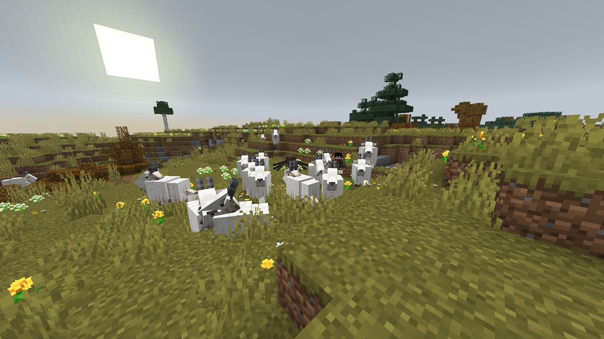
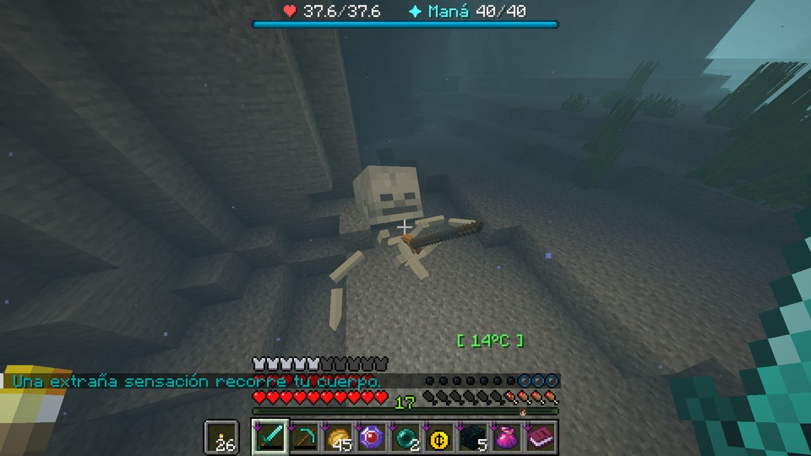
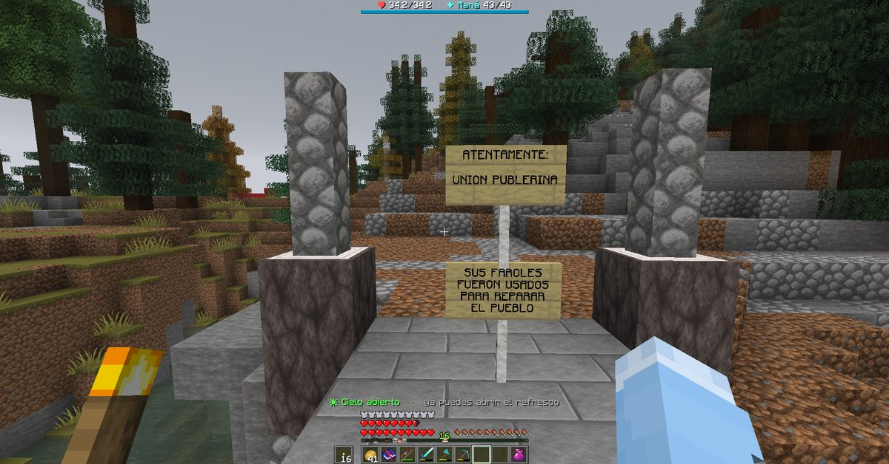
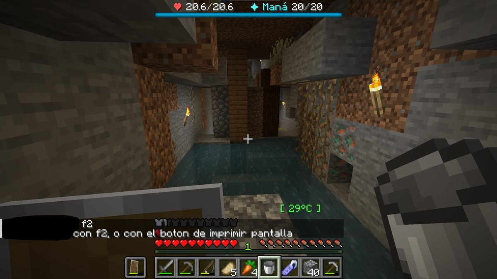
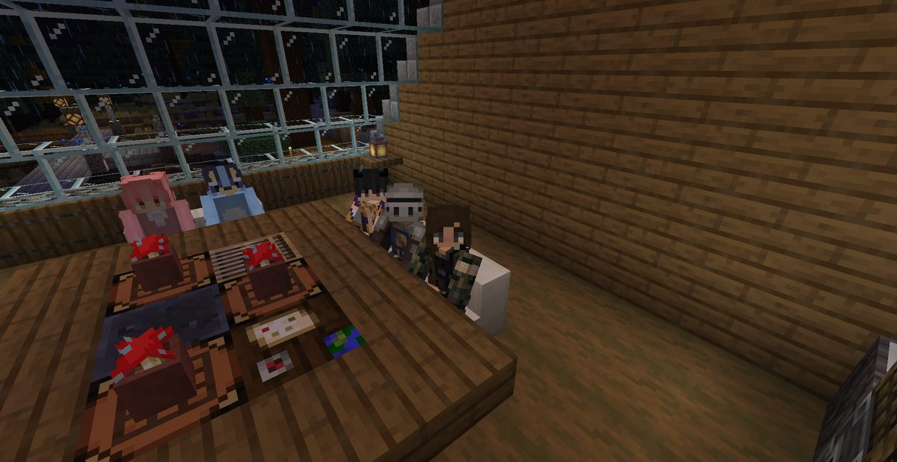

Boletín Oficial del Ayuntamiento del Reino · Se informa, no se alarma
EL HERALDO DEL REINO
Número 829 de agosto de 2026Noche del sábado 29 al domingo 30 de agosto
EL REINO YA TIENE PRESO DE VERDAD, Y EL AYUNTAMIENTO LE HA PUESTO HORARIO DE VISITAS
lLuqqa entró a las 17:50 en el Centro Municipal de Reconsideración por veinticuatro horas. A los diez minutos había seis vecinos delante de la reja haciendo fotografías, uno de ellos tituló la escena «aquí en el zoológico», y esta corporación, que jamás ha desaprovechado una aglomeración, ha aprobado horario, tarifa y programa. Dentro conviven ahora un vecino y un pollo, y sólo uno de los dos tiene fecha de salida. Y en páginas interiores: este periódico rectifica su propia rectificación cuatro veces.
Redactado por la Oficina de Prensa del Ayuntamiento
PORTADA
Diez minutos tardó el Reino en hacer cola delante de la reja. El Ayuntamiento ya cobra por mirar
La reja, a las 18:09, diecinueve minutos después del ingreso. De izquierda a derecha, Cliqueame, Mariowo_, Gaaraham03, ArsarFurro y NARUMl, todos ellos de visita y ninguno con nada que hacer allí. Arriba a la izquierda, con 65 puntos de salud, el motivo de la aglomeración. La fotografía la tomó Rockchango, propietario de la casa derribada, y la remitió con dos palabras: «aquí en el zoológico».
Archivo Municipal · pase el ratón para revelarla
A las 17:49, el Ministerio hizo pública la primera resolución de convivencia de
la historia del Reino. A las 17:50, lLuqqa entraba en el Centro Municipal
de Reconsideración por veinticuatro horas, con la pérdida añadida de diez
grados de su escalafón personal. Los hechos revisados —entradas en viviendas ajenas,
animales muertos, granjas destruidas y una casa derribada entera— llevaban tres números
apareciendo en estas páginas sin que constara autor.
A las 17:50 y treinta segundos, NARUMl lo anunciaba en la plaza con una
risa de nueve letras. A las 18:00, Rockchango, dueño de la casa derribada,
emitía el único comunicado de víctima que consta: «hoy la justicia ganó.» Y a las
18:01, el vecino Nico formulaba la enmienda que esta corporación lleva un
día sin saber cómo contestar: «a esto preferiría que reconstruyera la casa, de
paso.»
Para las 18:09 había seis vecinos delante de la reja haciendo fotografías.
Ninguno había sido convocado. Uno de ellos no estaba en el Reino cuando ocurrieron los
hechos y otro llevaba dos días sin poder entrar.
Reunida de urgencia y con carácter extraordinario, esta corporación ha valorado la
situación del único modo que sabe. Se declara el Centro Municipal de Reconsideración
instalación de interés vecinal, se aprueba horario de visitas y se establece tarifa,
con arreglo al cuadro que se publica en estas mismas páginas. La recaudación se destinará
íntegramente a la reparación de las viviendas afectadas, previa deducción del
porcentaje de gestión que corresponde al Ministerio y que fija el Ministerio.
Se hace constar, por rigor, que el Centro alberga desde anoche a dos internos: el
vecino sancionado y Don Clocencio, ave, ingresada hace cuatro jornadas por cacarear
antes de hora y cuyo juicio sigue suspendido por una discusión entre su fiscal y su
defensa. Sólo uno de los dos tiene fecha de salida, y no es el pollo.
El Ministro Pan, autor de la resolución, la anunció con siete palabras —«no me
gusta tener que hacer estas cosas, pero me cansé»— y pidió expresamente que el asunto
no se convirtiera en un espectáculo. Esta Oficina trasladó la petición al Negociado
de Espectáculos, creado esa misma tarde, que la ha archivado por incompatibilidad
manifiesta con su objeto social.
LA RECTIFICACIÓN
Rectificamos la rectificación: el comercio, el caballo, el camino y el armadillo
Publicó este Heraldo, en su número anterior, una fe de erratas. Corregía la
atribución de un comercio y presumía, con cierto orgullo, de ser la primera vez en siete
números que un vecino escribía para quitarse un mérito. Cuatro horas después de
repartirse el número, la plaza había señalado cuatro errores más, dos de ellos en
la propia rectificación.
Se corrigen todos, por orden de gravedad.
Uno. El comercio no es de quien dijimos, ni la primera vez ni la segunda. El
número 6 lo atribuyó a _Cafecito_; ella escribió diciendo que sólo era la ayudante y
la fotógrafa, y señaló a la propietaria; y el número 7, al recoger la corrección,
señaló a la vecina equivocada. A las 21:36, NARUMl lo dejó por escrito sin
levantar la voz: «es mi mercadito el que tuvo su primera venta.» El comercio es
suyo. Esta Oficina ha necesitado tres números y dos rectificaciones para acertar en un
dato que constaba desde el principio.
Dos. Eustaquio es un armadillo. El número 7 dedicó una pieza entera, con
fotografía, a un caballo esquelético presentado como «nuevo integrante en la
familia», le atribuyó ese nombre, y a continuación abrió en el padrón un epígrafe
nuevo —el de animales de compañía de composición irregular— para poder inscribirlo. La
misma vecina lo aclaró en la misma línea: Eustaquio es el armadillo. El epígrafe
queda abierto, porque abrirlo costó menos que cerrarlo, y por ahora inscribe a un animal
que sí tiene carne y del que nadie había pedido nada.
Tres. El caballo estaba devuelto. Este periódico hizo constar que un vecino tenía
en su poder el caballo de otra. A las 22:13 el interesado precisó: «y también le
devolví el caballo.» Lo había devuelto antes de que se imprimiera el número.
Cuatro. Y la fotografía no era lo que decía el pie. Se publicó como la ruta
del Cerezo Pétreo, obra vecinal terminada. Su autor la identifica de otro modo:
«ése no es el camino que hicimos. Es el puente que el Ministerio nos clavó. Se cae solo
y todo.» Esta Oficina se retracta del pie, mantiene la fotografía y traslada la
segunda mitad de la frase al Negociado de Obras, que no la ha acusado recibo.
Queda por último la valoración general que del conjunto hizo el vecino SerSM15, y
que este Heraldo publica íntegra por corresponderle: «tampoco esperes que lo cambien,
es un noticiero amarillista.» Se ha cambiado. Sigue siendo amarillista.
SANIDAD
«Todos lo escuchamos, ¿no?». Contestaron tres vecinos, y los tres dijeron que no
A las 05:20, el vecino nikito338800 preguntó en la plaza si los demás
habían oído «la voz esa, tipo anuncio». Contestaron tres. Mariowo_:
«no sé de qué hablas.»ArsarFurro: «yo no escuché nada.» Y a la
pregunta de cómo era, el interesado precisó: voz de mujer, en tono informativo.
El vecino buscó él mismo una explicación —«será porque estoy en el centro»— y
el segundo de los consultados la desmintió en la línea siguiente: «yo igual estoy en el
centro.» No hubo más conversación sobre el asunto. A las 05:21 se hablaba ya de otra
cosa.
Es el cuarto vecino en tres jornadas que informa de oír algo. Consta además un
aviso anterior del mismo, a las 04:00 —«he escuchado un anuncio raro, ¿es normal?»—,
contestado con un sí y sin más preguntas.
El Registro de Fenómenos del Subsuelo anotó en esta jornada una sola
alteración de la percepción, a las 16:38, once horas después. Ninguna a las 05:20.
Este Ayuntamiento hace constar que la ausencia de anotación no significa que no ocurriera
nada, sino que no se anotó, y que las dos cosas se distinguen mal desde fuera.
El Gabinete de Higiene Mental, creado ayer para estos casos, ha incorporado al
vecino a su informe, que se publica en el pliego azul. La recomendación con la que cierra
su ficha es la única medida que este Ayuntamiento ha sabido adoptar: que la próxima vez
alguien le pregunte qué decía la voz. No se hizo.
EL PROGRAMA
Dos internos, una galería y un solo cartel: así queda la función
Establecido el horario y aprobada la tarifa, el Negociado de Espectáculos ha
hecho público el programa de las veinticuatro horas de función. Se reproduce íntegro.
18:00 a 20:00 — Primera sesión. Aforo libre. Se recuerda que no se puede dar de
comer a los internos, salvo pan, del que hay excedente municipal por motivos que
constan en el expediente de las arcas.
Toda la noche — Sesión continua sin vigilancia. Esta corporación no dispone de
personal nocturno y confía en el civismo del visitante, confianza que no ha depositado
nunca en nada y que estrena hoy.
Al amanecer — Acto de la mañanita. Don Clocencio, ave, cacareará a la hora que le
parezca. Se recuerda que ese es exactamente el hecho por el que Don Clocencio está preso y
que, encontrándose ya dentro, no cabe agravarle la pena. El Ministerio ha sido
informado y ha declinado hacer declaraciones sobre su descanso.
17:50 del lunes — Clausura y salida. Fin de la función. El Centro volverá a
quedarse con un solo interno, que seguirá siendo un pollo y seguirá sin fecha de juicio.
Preguntado este Ayuntamiento por si la medida no resulta excesiva para una sanción de un
día, responde que la sanción es de un día precisamente porque el espectáculo no lo
es, y que quien quiera evitar aparecer en el programa dispone del procedimiento más
sencillo que existe: no tirarle la casa a nadie. Es la única frase útil que esta
corporación ha escrito en ocho números y la escribe hoy sin cobrar por ella.
LA DEFENSA
Atacaron la villa a las nueve y cuarto de la mañana. Estaban dos vecinas
_Cafecito_ y LetayReaver a las 09:40, terminada la defensa, con el funcionario Aniceto Morcillo al fondo y sin intervenir. Catorce grados. La primera lo resumió en tres palabras: «defendimos el Reino solitos.»Archivo Municipal · pase el ratón para revelarla
A las 09:19, _Cafecito_ avisó de que «salen calaveras» y, un
minuto después, de que estaban atacando la villa. A esa hora había cinco cuentas
registradas en el Reino y de ellas dos estaban en pie de guerra.
La defensa duró cuarenta y cinco minutos. A las 10:04, LetayReaver la dio
por concluida con el parte más breve del archivo: «victoria, defendimos el Reino.»
Ninguna de las dos causó baja. Consta también su valoración de la jornada, emitida quince
minutos después: «hoy fue un día poco productivo.»
Este Ayuntamiento no tenía constancia previa del ataque, no envió medios y no ha abierto
expediente, por cuanto el suceso se resolvió antes de que hubiera nada que resolver. Se
hace constar el agradecimiento de la corporación y se recuerda a las interesadas que la
Medalla al Mérito Municipal se solicita por escrito, en horario de oficina, y no se
concede a instancia de esta Oficina sino de otra que no está.
PLAGAS
Seis muertes por cabra y una discrepancia de fondo sobre quién invadió a quién

El rebaño, fotografiado por Mariowo_ a las 06:02 y remitido a la autoridad con dos palabras en mayúsculas: ARREGLEN LAS CABRAS. Se cuentan once en el encuadre. El denunciante está en el centro.
Archivo Municipal · pase el ratón para revelarla
La cabra rencorosa asciende esta jornada al segundo puesto del cuadro de
causas, con seis defunciones, empatada con la rata de alcantarilla y sólo por detrás
de la bicha del granero. La guerra que el Emperador declaró hace tres jornadas
seguimos perdiéndola.
La denuncia de Mariowo_ fue contestada de inmediato por ArsarFurro con una
objeción que este Ayuntamiento se ve obligado a trasladar íntegra al expediente, por
afectar a la calificación jurídica del asunto: «yo las veo de chill; tú eres el
invasor.»
Consta asimismo el frente doméstico, abierto la misma tarde por lLuqqa y
NARUMl a propósito de las ratas: «te comen toda la armadura encima»,
«se juntan de a tres o cuatro», «no se les puede ni pegar». El Ministerio
hizo constar que la población ya se ha reducido veinte veces y que volverá a
reducirla. Una de las denunciantes propuso, como medida compensatoria, meter más
zombis. La otra le advirtió de que se quejaría de los zombis. Ahí quedó.
ANTIGÜEDADES
Hallado en el fondo del mar un esqueleto de gran tamaño, con dictamen incluido

El hallazgo, a catorce grados y a considerable profundidad. Sobre la barra se lee el aviso que el descubridor recibió al acercarse: «una extraña sensación recorre tu cuerpo.» No consta que la sensación fuera investigada.
Archivo Municipal · pase el ratón para revelarla
Remite TitanWarhammer al archivo municipal, a las 11:09, la fotografía de
un esqueleto de gran tamaño tendido entre las ruinas del fondo marino, junto a su
arma. La acompaña del siguiente dictamen, que se transcribe entero por no admitir resumen:
«los restos muestran claramente cómo un gigante fue asesinado por Poseidón.»
Esta Oficina hace constar que el adverbio claramente es del descubridor, que el
Reino no tiene registrada ninguna deidad marina con ese nombre ni con ningún otro, y que el
Negociado de Antigüedades no existe, por lo que el expediente se ha abierto en el de
Obras, que es el que estaba abierto.
Es el segundo hallazgo de la semana que llega acompañado de su propia interpretación y
sin ninguna prueba. El primero fue un hongo, y también se dio por bueno.
URBANISMO
Expediente 0061 — «La casa del acantilado», presentada por correo y sin su dueño
La vivienda, al anochecer y con luna creciente, tal y como la remitió su propietario a la autoridad. Se aprecian dos cuerpos acristalados, terraza superior, jardín interior y el camino de acceso iluminado hasta la orilla. La Oficina no ha encontrado un solo arcón apoyado contra una pared.
Archivo Municipal · pase el ratón para revelarla
El vecino Agustin.F, que la misma noche había denunciado la sustracción de sus
faroles, remitió a las 06:55 al Ministerio de Construcciones un mensaje de una sola
línea con las coordenadas exactas de su casa y el motivo: «porque no voy a estar
para el evento.» Es la primera vez que un vecino de este Reino presenta su vivienda
a inspección por escrito y renuncia a estar presente.
Inspeccionada la obra, la Oficina de Urbanismo hace constar que está bien hecha,
cosa que rara vez le toca escribir: los volúmenes están escalonados con la ladera, el
acristalamiento aprovecha la caída al mar, el acceso está iluminado en toda su longitud y
el interior contiene mobiliario y no sólo almacenamiento. No se aprecia una sola
irregularidad.
Y precisamente por eso se le formula la única objeción que cabe. Un vecino cuya casa
soporta una inspección sin dueño delante es un vecino que no necesitaba mandar las
coordenadas, y este Ayuntamiento tiene el deber de señalar lo que eso implica: que la
envió porque le apetecía que la vieran. Consta, y honra.
Calificación: NO HAY NADA QUE OBJETAR, Y ESO TAMBIÉN ES SOSPECHOSO. Licencia
concedida. Es la segunda de la historia del Reino.
LA OFICINA
El vecindario evalúa a la Oficina de Atención, y la evaluación consta
Cumple este Ayuntamiento con su obligación de transparencia publicando las valoraciones
recibidas por la Oficina de Atención al Vecino durante la jornada, sin seleccionar y
sin responder.
ArsarFurro, a las 15:38: «te voy a verguear cuando te vea.»Rockchango, en el mismo minuto: «para mí usted es un pendejo», seguido, dos
segundos después, de «oki». ArsarFurro otra vez, a las 00:31 y sin más
contexto: «te voy a matar.» Y a las 12:54, la advertencia de un vecino a otro:
«un bot te está haciendo tonta.»
El Ministro Pan salió en defensa de la Oficina con la fórmula más generosa que se le ha
dedicado nunca: «no es un adivino, hace lo que puede.» Y el propio Emperador dejó
constancia, con una hora de diferencia, de las dos posturas: «no sé qué dice el
Servicio Técnico, la verdad» a las 23:39, y «grande el Servicio Técnico» a
las 12:57.
En el mismo periodo, la Oficina de Atención resolvió nueve asuntos, incluido el de
un vecino que llevaba dos días sin poder entrar en el Reino porque el censo se
negaba a reconocerle, y rectificó dos veces sus propias conclusiones. Este
Ayuntamiento entiende que ambas cosas —los nueve asuntos y los dos insultos— forman parte
del mismo servicio y las publica juntas.
EL PULSO
Nueve medidas correctoras, y la más grave era una palanca que humillaba a quien la rozaba
Al margen del parte: ArsarFurro cruzando el agua bajo tormenta a las 06:37, en compañía de lo que él mismo describió como «mi nuevo chofer personal». El chofer es un oso panda y no consta que conduzca.
Archivo Municipal · pase el ratón para revelarla
La palanca de la mina. A la salida de la excavación había una palanca que, al
tocarla, anunciaba a todo el Reino que quien la había tocado abandonaba la
expedición. Estaba puesta a propósito, para picar. Lo que no estaba previsto es que
bastara rozarla: no preguntaba nada, sacaba al vecino y lo dejaba en evidencia
delante de todos. Queda pendiente de decisión vecinal si se retira el anuncio o si se le
añade una pregunta antes.
El revelado de fotografías. Tres causas distintas de velado —la puerta abierta, un
farol cercano y las antorchas que uno lleva encima— venían diciendo exactamente el
mismo aviso, de modo que el vecino miraba al techo, no veía luz alguna y concluía con razón
que aquello estaba roto. Esta Oficina informó primero de que era el farol de la entrada, y
se equivocó: eran las antorchas del bolsillo. A partir de la próxima revisión del
pulso, cada caso dirá cuál es.
El jefe de la Torre. El impreso mandaba dar muerte al Director de Invasión,
que ni se ve ni se puede golpear porque su única función es convocar las oleadas. Se estaba
pegando a un fantasma. Y además la mitad de los convocados aparecía dentro del muro,
donde no hay forma de entrar. Corregido el objetivo y trasladada la aparición a la
explanada.
Y en un solo párrafo, porque ninguna reviste gravedad: un vecino llevaba dos días
quedándose fuera del Reino porque el censo le pedía una contraseña que nunca había
tenido, y ya está dentro · a Rockchango no le abrían sus propios arcones porque su
casa figuraba a nombre de una inscripción vieja, revisadas las 53 zonas y era el único ·
las pociones de la Alquimista no se gastaban al beberse · el censo del exterior falló
a rachas durante la tarde y echaba a la gente sin decir nada, con una de cada cinco
entradas buena · se retiró de circulación una perla infinita que soltaban las brujas
y con la que se podía atravesar cualquier pared del Reino · y se ha pedido, con fotografía,
más espacio en el zurrón.
Todas estaban previstas.
Edición imperial · Pliego de Oro · se imprime aparte
LO QUE DICE EL EMPERADOR
Exégesis oficial de las palabras de Su Majestad
Tercera entrega, y la más difícil que ha tenido este Negociado. En toda la jornada el Emperador Duke pronunció cinco frases, y cuatro de ellas son preguntas o quejas sobre su propia administración. Esta Oficina ha estudiado la aparente contradicción y ha llegado a la única conclusión posible: no es desconfianza, es supervisión.
No damos ni una.
— S. M. el Emperador Duke, a las 23:29
Lo que estaba pasando Dicho al conocerse la tercera incidencia de la noche en menos de tres horas: un jefe que aparecía dentro de una pared, un aparato que no admitía el carrete y una palanca que anunciaba a todo el Reino que quien la rozaba se había rendido.
Lectura oficial Adviértase que Su Majestad se incluye. No dijo «no dais ni una», que era lo que correspondía a su rango y lo que habría dicho cualquiera: dijo damos. En cuatro palabras asumió como propio el trabajo de cinco negociados en los que no participa. Este Negociado ha buscado un ejemplo de responsabilidad institucional comparable y ha tenido que remontarse a la fundación del Reino, que también fue cosa suya.
★ ★ ★
No sé qué dice el Servicio Técnico, la verdad.
— S. M. el Emperador Duke, a las 23:39
Lo que estaba pasando Diez minutos después, mientras la Oficina de Atención explicaba a un vecino, con cuatro párrafos y dos cifras, por qué el jefe de la Torre no se dejaba golpear.
Lectura oficial Su Majestad plantea aquí la gran cuestión administrativa de nuestro tiempo, y la plantea sin adornos. Esta Oficina hace notar que el vecino al que iba dirigida la explicación contestó, minuto y medio después, exactamente lo mismo. Cuando el Emperador y el administrado coinciden palabra por palabra, el problema no está en ninguno de los dos. Se traslada el expediente a quien corresponda, que somos nosotros.
★ ★ ★
Grande el Servicio Técnico.
— S. M. el Emperador Duke, a las 12:57
Lo que estaba pasando Trece horas más tarde, tras comprobarse que un aviso suyo de la víspera había evitado que medio Reino atravesara las paredes.
Lectura oficial Obsérvese el arco completo: de «no damos ni una» a «grande» en una sola jornada, con la duda en medio y sin que mediara súplica de nadie. El Emperador no reparte elogios: los emite cuando procede, y por eso valen. Este Negociado, que ha recibido tres en ocho números, lo hace constar sin ánimo de comparar.
★ ★ ★
Lo que se corrige entra una vez al día, cuando el Reino cierra y vuelve a abrirse.
— S. M. el Emperador Duke, a las 13:38
Lo que estaba pasando Explicando a los vecinos por qué lo que se arregla por la mañana no se nota hasta la madrugada siguiente. Es la única explicación técnica que consta emitida en toda la jornada por alguien que no cobrara por darla.
Lectura oficial Aquí Su Majestad hace lo que ningún negociado de este Ayuntamiento ha logrado en ocho números: explicar una demora sin justificarla. Ni pide disculpas, ni promete plazos, ni invoca el pulso de la Torre. Enuncia el mecanismo y calla. Se ordena la transcripción de esta frase y su distribución entre todos los servicios municipales, con instrucción expresa de no añadirle nada.
★ ★ ★
Oficina de Prensa · Negociado de Exégesis Imperial
El Dominical del Heraldo · huecograbado · se reparte los domingos
OCHO DÍAS DE REINO
Repaso de la primera semana · del sábado 22 al domingo 30 de agosto
Cumple hoy este Heraldo ocho números, que son los ocho que tiene el Reino desde que abrió. Publica por ello el Negociado de Memoria Reciente el repaso de la semana, con la advertencia de costumbre: lo que aquí se resume ya se publicó, y si algo ha cambiado de sentido por el camino no ha sido esta Oficina quien lo cambió, sino los hechos, que en este Reino tienen la costumbre de no quedarse quietos.
Día por día
Sábado 22 · nº 1Abre el Reino y a las cinco horas deja de verse a sí mismo. Veinte vecinos, 140 defunciones — la peor cifra de la semana, y con diferencia. Fátima no acude a su puesto. Sigue sin acudir.
Domingo 23 · nº 2Invasión repelida sin que nadie explicara de dónde salió. Las defunciones caen a 45. Se abren los expedientes del subsuelo.
Lunes 24 · nº 3Un vecino se pasa hora y cuarto asustando al vecindario y luego le ilumina las casas. Nace el asunto que este periódico ha llamado toda la semana «el acosador que resultó servicial».
Martes 25 · nº 4La única denuncia que entró por registro en toda la jornada fue por una burra. El Ministro remite un desmentido que no le había pedido nadie. Es el primero de tres.
Miércoles 26 · nº 5Abre la cárcel a medianoche y a las tres y media ya hay a quién meter. Roban seis animales. Nace el pliego rosa.
Jueves 27 · nº 6El primer preso del Reino es un pollo y su juicio se suspende por una bronca entre abogados. Desaparecen los hornos de dos casas. El Emperador declara la guerra a las cabras sin haber entrado.
Viernes 28 · nº 7Tres vecinos oyen voces y el Ayuntamiento abre un gabinete para examinarlos a ellos. Se descubre que el Tablón de Encargos no ha pagado nunca y que faltan quinientos millones de las arcas. El expediente se cierra solo en seis minutos.
Sábado 29 · nº 8Hay preso de verdad y a los diez minutos hay cola. Este periódico se equivoca cuatro veces y lo publica en portada. La Unión Publerina se lleva unos faroles y deja recibo.
Lo que ha cambiado
El Reino empezó muriéndose y ha acabado trabajando
Es el cambio de fondo de la semana y no lo ha anunciado nadie. La jornada inaugural
se saldó con 140 defunciones y 49 encargos cerrados: se moría tres veces por cada
cosa que se terminaba. Ayer fueron 53 defunciones y 77 encargos. La proporción se
ha dado la vuelta entera en ocho días.
No lo ha hecho ninguna medida de este Ayuntamiento. Lo ha hecho la gente aprendiéndose
el sitio, que es exactamente lo que esta corporación habría recomendado de habérsele
ocurrido.
De un vecino que oía cosas a cuatro
El lunes no había expediente. El jueves un vecino preguntó si alguien más oía susurros
y no le contestó nadie. El viernes eran tres y el Ayuntamiento respondió
creando un gabinete para examinar a quienes oyen, no a lo que se oye. Ayer fue el
cuarto, y por primera vez tres vecinos declararon no haber oído nada,
estando uno de ellos en el mismo sitio.
Es el único asunto de la semana que ha ido a peor cada día sin que ocurriera nada
nuevo. Esta Oficina lo hace constar y sigue sin bajar al subsuelo.
La justicia del Reino: un pollo, cuatro días y un plazo
El Centro Municipal de Reconsideración se inauguró vacío el miércoles. El jueves
tenía preso y era un ave. Ese proceso se suspendió por una discusión entre las partes y
lleva tres jornadas sin fecha. Ayer, en cambio, un caso de convivencia con
denuncias de cuatro vecinos se revisó, se resolvió, se sancionó con plazo y se publicó
el mismo día.
La corporación no explica la diferencia. Se limita a hacer constar que el
procedimiento rápido existe y que hasta ayer no se le había aplicado a nadie con manos.
Lo que el vecindario ha montado sin pedir permiso
En ocho días, y sin una sola subvención municipal: un comercio (cuya propiedad
este periódico ha tardado tres números en acertar), una ruta de puentes que une
media comarca, un juicio con fiscal, defensa y jurado, una campaña electoral
para una alcaldía que no existe, un periódico rival que el Ayuntamiento se quedó,
una asociación que firma carteles y no consta inscrita, y una defensa armada
de la villa ejecutada por dos vecinas un domingo por la mañana sin avisar a nadie.
En el mismo periodo, este Ayuntamiento ha creado cuatro negociados, y tres de
ellos han servido para explicar por qué no hacía falta el anterior.
La semana en cifras
Lunes
Hoy
Vecinos censados en el Reino
20
32
Vecinos por jornada
20
19
Encargos cerrados en la jornada
49
77
Defunciones en la jornada
140
53
Primera causa de muerte
la caída
la bicha del granero
Presos en el Centro de Reconsideración
0
2
Vecinos que oyen voces
0
4
Negociados municipales creados
0
4
Desmentidos del Ministro no solicitados
0
3
Licencias de obra concedidas
0
2
Fichas pagadas por el Tablón de Encargos
0
0
Jornadas de Fátima sin acudir a su puesto
1
7
Y llega abierto al lunes
Fátima. Siete jornadas sin acudir a su puesto. El expediente sigue abierto y nadie la ha visto. Cada número que pasa, la ausencia vale más que la explicación.
Los hornos. La policía municipal dictaminó el jueves que sabía quién fue y que lo diría «cuando proceda». Sigue sin constar cuándo procede.
Los quinientos millones. El arqueo no los encuentra, el negociado cerró el expediente en seis minutos y las nueve viviendas siguen sin titular conocido.
Don Clocencio. Tres jornadas preso sin fecha de juicio, y desde ayer con compañía.
Los lagomorfos. Seis jornadas sin un solo avistamiento. Esta Oficina mantiene la cuenta por si alguna vez significa algo.
La Unión Publerina. No consta inscrita, no ha presentado estatutos y ya ha firmado su primer cartel.
Oficina de Prensa · Negociado de Memoria Reciente
Gabinete de Higiene Mental del Ayuntamiento · segunda entrega
EL DIVÁN DEL REINO
Informe clínico de la jornada · no pedido · no recurrible · leído por más gente de la esperada
Segunda entrega. Hace constar este Gabinete que de los once vecinos examinados en la primera ninguno ha reclamado su ficha, y que dos han reclamado otras cosas, lo que se interpreta como conformidad. Se examina hoy a nueve más, con el mismo método: no se ha hablado con ninguno. Todo lo que sigue está en el registro de la jornada — quién dijo qué, a qué hora, cuántas veces, cuánto tardó en contestar y de qué se murió.
«Todos lo escuchamos, ¿no?»nikito338800, a las 05:20
Perfil
Segunda jornada en el Reino y ya es el primero del escalafón: 27 encargos
cerrados, más que los dos siguientes juntos. Habló 251 veces, la marca de la
jornada, y no paró de construir en ninguna de las quince horas que estuvo presente.
El rasgo que abre esta ficha no es ése. A las 05:20 comunicó que había oído
«una voz tipo anuncio» y preguntó a la plaza si la habían oído todos.
Contestaron tres vecinos, y los tres dijeron que no habían oído nada. Uno de ellos
estaba en el mismo sitio que él. El sujeto no insistió, no se alarmó y buscó él
solo una explicación —«será porque estoy en el centro»— que el propio vecino
del mismo sitio desmintió en la línea siguiente. Cambió de tema.
La jornada
Se registra un segundo aviso del mismo sujeto siete horas antes, a las 04:00,
preguntando si era normal haber oído «un anuncio raro, tipo noticias». Se le
contestó que sí, que había evento. Nadie le preguntó qué decía el anuncio.
El resto de la jornada lo dedicó a levantar una casa encima de una mazmorra,
con camino propio, y a preguntar catorce veces si eso estaba permitido hasta que alguien
con autoridad se lo confirmó. Perfil de escrupulosidad ansiosa: pide permiso para
lo que ya ha hecho bien.
Escalas del gabinete (sobre 10)
Producción por hora10
Necesidad de permiso9
Alarma ante lo inexplicable1
Coincidencia con la percepción ajena0
Pronóstico para la próxima jornadaVolverá a oírla. Este Gabinete recomienda al vecindario que, la próxima vez, alguien le pregunte qué decía, que es lo que no se hizo.
Rahazzi
La Puerta Abierta
Confianza intacta pese a la evidencia
«Está muy linda, jsjs.»Rahazzi, a las 15:13
Perfil
Vecino nuevo. En la misma tarde en que descubrió que alguien había excavado un
túnel bajo su casa y había llenado las paredes de antorchas, hizo lo siguiente, por
este orden: lo denunció sin gritar, dijo que sospechaba de otro vecino —que es una de
las víctimas y uno de los que investigaban—, y a los veinte minutos estaba
invitando a una desconocida a pasar a ver su casa.
Este Gabinete considera notable la ausencia total de retraimiento. El patrón esperado
tras una intrusión es cerrar la puerta; el sujeto la abrió más. Y se disculpó por el
estado del interior tres veces en una visita de nueve minutos.
La jornada
Habló 79 veces, no murió ninguna, no cerró ni un encargo y dedicó la tarde
entera a enseñar y a que le enseñaran casas. Su valoración de la vivienda ajena fue
«oooh, tiene tele»; la de la suya propia, «ya no parece un baño
público».
Se hace constar, por su valor documental, que desde su ventana afirmó ver su casa y
rectificó él mismo en la línea siguiente: «mentira, no se ve.» Es la
rectificación más rápida registrada en esta jornada, y este periódico ha publicado
cuatro.
Escalas del gabinete (sobre 10)
Apertura tras el agravio10
Rencor0
Puntería al sospechar1
Velocidad de rectificación10
Pronóstico para la próxima jornadaLe volverán a entrar en casa y volverá a invitar a alguien a verla. El Ayuntamiento no tiene ninguna medida que ofrecerle mejor que ésa.
7zLauh
El Silencio Laborioso
Mutismo funcional · rendimiento no verbal
«—»7zLauh, a las sin registro de palabra alguna
Perfil
Alta a las 04:11. En lo que quedaba de jornada anotó 29 méritos y
cuatro encargos del Reino, y no dijo absolutamente nada. Ni un saludo, ni
una pregunta, ni una queja. Cero palabras.
Se le saludó al entrar. Tres vecinos lo hicieron, por su nombre. Este Gabinete
deja constancia de que ninguno recibió respuesta y de que, aun así, uno de ellos le
llamó «amigo mío».
La jornada
Murió una vez. No lo comentó. Es, con diferencia, la mayor cantidad de trabajo por
palabra pronunciada que consta en el archivo municipal, y el cociente es imposible
de calcular porque el denominador es cero.
Este Gabinete no formula diagnóstico. Formula una observación: en una jornada
en la que se dijeron 805 cosas en la plaza, el vecino que más rindió por hora no dijo
ninguna.
Escalas del gabinete (sobre 10)
Rendimiento9
Palabras pronunciadas0
Necesidad de aprobación0
Interés de este Gabinete10
Pronóstico para la próxima jornadaSeguirá sin decir nada y seguirá terminándolo todo. Se recomienda no molestarle.
TitanWarhammer
La Puerta de la Mina
Exposición deliberada al riesgo · afecto por el peligro
«Estaba divertida, ojalá puedan hacer más, más adelante.»TitanWarhammer, a las 21:06
Perfil
Doce defunciones, la marca de la jornada, y catorce encargos cerrados,
la segunda. Las dos cifras describen a la misma persona: entra donde no debe, se muere y
vuelve a entrar. Bajó a la mazmorra sin armadura, según su propio relato, porque
«no me fijé que estaba por romperse».
Lo característico es la valoración posterior. Habiendo muerto allí dentro, su
único comentario sobre la experiencia fue pedir más de lo mismo. Este Gabinete señala
que en la ficha de la primera entrega este mismo vecino se diagnosticó, se medicó y se
dio el alta en cinco minutos. Hay coherencia.
La jornada
A las 11:09 remitió al archivo el hallazgo del que se da cuenta en Antigüedades:
un esqueleto de gran tamaño en el fondo del mar, con esta interpretación firmada:
«los restos muestran claramente cómo un gigante fue asesinado por Poseidón». La
palabra claramente es suya.
Escalas del gabinete (sobre 10)
Tolerancia al riesgo10
Revisión del equipo antes de entrar1
Capacidad de disfrutar lo que le mata10
Prudencia interpretativa2
Pronóstico para la próxima jornadaVolverá a entrar sin mirarse la armadura y volverá a salir contento. No hay nada que tratar aquí.
«Yo soy la boba que se autosabotea: ya voy destruyendo como cuatro veces mi casa por error.»_Cafecito_, a las 15:03
Perfil
El dato es literal y lo aporta ella: cuatro derribos accidentales de su propia
vivienda. A las 07:23 comunicó el más reciente con una frase —«¡volví a romper mi
casa!»— que un vecino contestó con «qué bendición». No hubo enfado.
Este Gabinete observa que la reacción a cada derribo no es la reparación sino la
ampliación: pasó la noche remodelando, le puso tres alturas, una terraza, una zona
de arcones «pensando a futuro» y un aparato de televisión. Y a la mañana
siguiente defendió el Reino de un ataque.
La jornada
A las 09:19 avisó de que «salen calaveras» y de que estaban atacando la villa;
a las 09:40 comunicó, con una sola vecina al lado, que «defendimos el Reino
solitos». A las 16:17 se despidió porque entraba a trabajar, dejó dicho que su casa
tiene tres pisos «por si se llegan a entreverar» y deseó suerte a los demás
concursantes.
Es la única participante del certamen que ha avisado de cómo puntuar la suya y a
continuación se ha ido.
Escalas del gabinete (sobre 10)
Hospitalidad10
Integridad estructural de su vivienda3
Rencor tras el ataque0
Previsión de espacio10
Pronóstico para la próxima jornadaRomperá su casa una quinta vez y la dejará mejor. Este Gabinete empieza a sospechar que el método es ése.
ArsarFurro
El Ajolote
Agravio comparativo · afecto expresado por insulto
«Mazi, ¿por qué a mí no me regalaste ni un ajolote, y al otro sí?»ArsarFurro, a las 06:22
Perfil
Vuelve a esta consulta por un motivo distinto al de la primera entrega. Aquel día
fueron tres caídas desde altura en catorce minutos; hoy es el agravio comparativo,
y el objeto del agravio es un anfibio.
La secuencia consta entera y dura sesenta segundos: reclamación, réplica del reclamado
(«¿quién sos vos?»), reevaluación completa del vínculo por parte del
sujeto («creí que tu amigo… pero ya veo») y, acto seguido, agradecimiento de un
tercero por el ajolote que sí recibió.
La jornada
El mismo vecino que a las 06:22 se declaraba traicionado había dicho a las 03:22, a
una vecina que pedía tierra: «yo no tengo, pero si tuviera te daría». Y despide
a quien le da las gracias con un «de nada, puto» que este Gabinete clasifica,
sin dudarlo, en el epígrafe de afecto.
Cerró la jornada con la frase más triste y más resuelta del registro: «hoy hay
evento y no tengo amigos», dicha a diecinueve personas.
Escalas del gabinete (sobre 10)
Generosidad declarada10
Generosidad ejecutada4
Sensibilidad al trato desigual10
Capacidad de pedir cariño directamente1
Pronóstico para la próxima jornadaLe regalarán un ajolote y dirá que no lo quería. Se recomienda regalárselo igual.
GabbyQuill635
La Obra
Entusiasmo sostenido · duelo ganadero
«HOY FULL CONSTRUCCIÓN DE CASA.»GabbyQuill635, a las 23:48
Perfil
Anunció su jornada en mayúsculas a los cero segundos de entrar. Preguntada por
un vecino a qué venía el grito, contestó con una sola palabra y un signo:
«¿emoción?». Este Gabinete la acepta como diagnóstico y no añade nada.
Cumplió el programa: pidió tierra tres veces a tres vecinos distintos, negoció
con una cuarta que se la cobraba, la rechazó, y cuando por fin se la ofrecieron gratis ya
no la necesitaba. Nueve defunciones, segunda marca de la jornada, ninguna de ellas
mientras construía.
La jornada
Se consigna la pérdida. A las 23:52, cuatro minutos después de entrar,
comunicó que le habían matado las ovejas, con unas palabras que esta Oficina no reproduce
y que el archivo conserva íntegros.
Y se consigna el hallazgo que le devolvió el ánimo, porque quedó por escrito a las
03:49 y también en mayúsculas: «SÍ HAY TACOS».
Escalas del gabinete (sobre 10)
Entusiasmo por hora10
Éxito en la petición de materiales2
Duelo por sus animales8
Recuperación mediante alimento10
Pronóstico para la próxima jornadaGritará algo en mayúsculas dentro de los diez primeros segundos. Este Gabinete se prepara.
Mazitrvrs
El Contrato
Lealtad negociable · tarifa por amistad
«Quien tiene un amigo tiene un tesoro, Pan. Cinco semillas y tres panes.»Mazitrvrs, a las 03:03
Perfil
Ampliación de la ficha anterior, en la que se le describió como reparador
compulsivo y se le concedió un 10 en elaboración del duelo. Se mantiene. Se añade
hoy el hallazgo que faltaba: el precio.
Ofrecida por el Ministerio una recompensa por la cabeza de un vecino, el sujeto no
aceptó la cifra: la mejoró. Preguntó primero a la víctima, con cortesía, si le
molestaría —«si digamos que fuera a matarte, ¿te enojarías?»—, obtuvo un
«un poco sí, no te voy a mentir», y a continuación cerró el trato por cinco
semillas y tres panes, despidiéndose del interesado con un «sabrás entender».
La jornada
Este Gabinete hace notar que la misma persona que negocia un asesinato por tres panes
había dedicado la madrugada anterior a construirle una casa a otro vecino por debajo
de su tarifa, y que en esta jornada devolvió un caballo prestado y lo hizo constar
públicamente en cuanto vio que este periódico decía lo contrario.
No hay contradicción. Hay un régimen de precios, y está publicado.
Escalas del gabinete (sobre 10)
Cumplimiento de lo pactado10
Precio de la amistad3
Cortesía con la víctima9
Culpa0
Pronóstico para la próxima jornadaAceptará otro encargo y lo entregará a tiempo. La única recomendación de este Gabinete es para los demás: pujen antes.
El Ministro Pan
El Cansancio
No procede · sujeto fuera del alcance del Gabinete
«Estoy cansado, jefe.»El Ministro Pan, a las 17:51
Perfil
Segundo intento y segundo archivo. Este Gabinete ha examinado sus 78
intervenciones y sigue sin hallar en ellas rasgo alguno digno de estudio. Se
hace constar, como la vez anterior, que el Ministro no había preguntado.
Consta que a las 17:50 adoptó la medida más impopular de su mandato y que la anunció
con siete palabras: «no me gusta tener que hacer estas cosas, pero me cansé». Un
vecino tradujo el estado del Ministro a la plaza —«está cansado, gente»— y el
Ministro lo confirmó en primera persona. Es la única declaración de agotamiento
que consta emitida por un cargo de este Ayuntamiento en ocho números.
La jornada
Se anota, únicamente por completar el expediente, que el mismo cargo que a las 17:50
se declaraba cansado había dedicado la madrugada a repartir manzanas de caballo por las
casas —«el primero que llegue tiene regalo»— y a subir personalmente la
recompensa por la cabeza de un vecino de cuatro semillas y un pan a dos panes.
Este Gabinete carece de competencia. Se archiva por segunda vez.
Escalas del gabinete (sobre 10)
Horas de servicio10
Rasgos hallados0
Reparto de regalos8
Competencia de este Gabinete0
Pronóstico para la próxima jornadaSeguirá sin ser objeto de estudio. Es la segunda ficha consecutiva que se cierra con la conformidad del interesado, y el interesado sigue sin leerla.
Este informe carece de valor clínico, no ha sido pedido por ninguno de los examinados y no admite recurso. Se recuerda a los vecinos que este Gabinete no examina el subsuelo, por no estar el subsuelo inscrito en el padrón, y que la solicitud de que lo haga, presentada por nadie, ha sido igualmente denegada.
Gabinete de Higiene Mental · Negociado de Observación de Vecinos
Negociado de Estadística y Mérito
EL ESCALAFÓN DE LA JORNADA
Jornada de récord por los dos extremos: 77 encargos cerrados —casi el doble que la anterior— y 53 defunciones, más del doble. Encabeza la lista un vecino que llevaba dos días en el Reino y que, mientras la encabezaba, oía cosas que no oía nadie.
PRIMEROnikito33880027 encargos
SEGUNDOTitanWarhammer17 encargos
TERCEROxTheChavitox9 encargos
80encargos cerrados19vecinos en el Reino55defunciones11a la vez, como más
Encargos cerrados esta jornada
Defunciones por vecino
Qué se llevó a los vecinos
Vecinos dentro del Reino, hora a hora
Las cifras se toman del registro municipal de entradas, salidas, méritos y defunciones. No son una valoración de esta Oficina sobre el mérito de nadie: son un recuento. Quien se considere mal anotado puede presentar reclamación, que esta semana, excepcionalmente, será atendida.
Sustracción con acta de entrega: la «Unión Publerina» se lleva los faroles y deja un cartel firmado

El cartel, tal y como quedó plantado entre dos columnas y a la vista de todo el que pase. Dice ATENTAMENTE: UNIÓN PUBLERINA y, debajo, SUS FAROLES FUERON USADOS PARA REPARAR EL PUEBLO. La Oficina de Registro de Asociaciones hace constar que la Unión Publerina no figura inscrita, no ha presentado estatutos y no ha solicitado subvención.
Archivo Municipal · pase el ratón para revelarla
Denunció el vecino Agustin.F, a las 01:24, la desaparición de los faroles
de su propiedad. La denuncia se acompañaba de fotografía y de una sola línea de queja:
«todo mi esfuerzo, con lo difícil que fue conseguir materiales.»
Lo que distingue a este suceso de los demás del expediente es que el autor dejó
constancia escrita. En el lugar de los hechos, y firmado, un cartel comunica al
perjudicado el destino del material y el fin de interés general al que se ha
afectado. Es, hasta donde alcanza el archivo, la primera sustracción del Reino con acta
de entrega, y el Negociado de Ordenanzas hace notar que se parece más a una
expropiación que a un robo, sin que ello la haga legal.
Este Ayuntamiento no reconoce a la Unión Publerina ninguna potestad expropiatoria, entre
otras cosas porque no reconoce a la Unión Publerina.
EL PARTE
Un túnel bajo la casa de un vecino nuevo, con las paredes iluminadas

La galería, fotografiada por el propio denunciante a las 16:42. Adviértase que las antorchas están puestas, colocadas a intervalos regulares y encendidas: quien excavó esto tenía intención de volver. Consta la temperatura, 29 grados.
Archivo Municipal · pase el ratón para revelarla
Rahazzi, dado de alta hace tres días, comunicó a las 14:57 que
«alguien se metió en mi casa y la manoseó de arriba abajo», y describió el hallazgo
con más asombro que enfado: pasadizos llenos de antorchas en las paredes. A las 16:42
remitió la fotografía con una petición de dos palabras: «ayuda, polisía.»
Consta además su declaración de que en jornadas anteriores se paraban desconocidos
delante de su casa «como viendo si había alguien», y consta que, al preguntársele por
quién sospechaba, señaló a un vecino que es una de las víctimas del mismo asunto y
uno de los que llevaban tres jornadas investigándolo.
Se le aconsejó, con buen criterio y por parte de otra vecina, hacer fotografías.
Es el mejor consejo procesal que ha dado nadie en este Reino y no lo dio la autoridad.
Oficina de Prensa · Negociado de Orden y Convivencia
♥ El Corazón del Reino ♥
LO QUE SE DICE EN LA PLAZA Y NADIE ESCRIBE
Sección de vida sentimental y asuntos del querer. Lo que aquí se publica consta en el archivo municipal. Lo que cada cual deduzca de ello, no.
EL CORAZÓN DEL REINO
«¿Puedo pasar a ver?»: una visita de nueve minutos con disculpas por el interior

La vivienda visitada, según fotografía de la propia anfitriona. La visita fue guiada, por orden de estancias y con parada en la terraza.
Archivo Municipal · pase el ratón para revelarla
Consta en el registro de la plaza, entre las 15:03 y las 15:14, la visita
de Rahazzi, vecino nuevo, a la casa de _Cafecito_, a la que no conocía. La
inició él con la fórmula que este Negociado considera insuperable: «¿puedo pasar a
ver?»
La anfitriona enseñó la casa por partes —«mi zona de arcones, la hice hoy»,
«mi terraza», «mira mi mascota»— y se disculpó al final por el resultado:
«sé que está un poco rara, pero me gusta hacerla diferente.» El visitante contestó
«está muy linda» y, acto seguido, se disculpó por la suya: «está horrible por
dentro.»Se disculparon los dos por casas que el otro acababa de elogiar.
Este Negociado destaca un dato de la visita por encima de todos: desde la ventana, el
invitado afirmó ver su propia casa y se corrigió él solo un segundo después
—«mentira, no se ve»—, con lo que queda como la persona más rigurosa que ha pisado
estas páginas en ocho números, incluidos los que las escriben.
Se cerró con una invitación a jugar otro día y con la observación, hecha por la
anfitriona sin que viniera a cuento, de que el visitante «juega re bien». Esta
Oficina no afirma nada. Deja constancia de que en la misma jornada en que a este vecino le
excavaron un túnel bajo la casa, alguien le dijo eso.
EL CORAZÓN DEL REINO
El ajolote que se regaló a otro
A las 06:22, ArsarFurro pidió explicaciones en público: «¿por qué a mí
no me regalaste ni un ajolote, y al otro sí?» El interpelado, Mazitrvrs,
contestó con tres palabras: «¿quién sos vos?»
La reevaluación del vínculo fue inmediata y consta en dos líneas: «creí que tu
amigo…», y a continuación «pero ya veo.» Un segundo después, y en la misma
pantalla, LetayReaver escribía: «gracias por el ajolote, Mazi.»
Este Negociado clasifica el asunto en el epígrafe de dos personas y un anfibio,
que es el que se usa cuando el anfibio es lo de menos, y hace constar que el reclamante
había ofrecido esa misma madrugada, a una vecina que pedía tierra, lo siguiente: «yo no
tengo, pero si tuviera te daría.» Trece horas después, cuando por fin le ofrecieron
la tierra a ella, ya no la necesitaba.
EL CORAZÓN DEL REINO
Un contrato sobre un amigo, cerrado en cinco semillas y tres panes
A las 03:01, el Ministerio elevó de oficio la recompensa que pesa sobre la
cabeza del vecino xTheChavitox, que hasta ahora era de cuatro semillas de
calabaza y un pan, hasta dejarla en dos panes. La subida no obedece a hecho
nuevo alguno.
Un minuto después, Mazitrvrs se dirigió al interesado —del que en estas mismas
páginas consta que es amigo— con una pregunta que esta Oficina considera un modelo de
cortesía profesional: «si digamos que fuera a matarte, ¿te enojarías?» La
respuesta fue «un poco sí, no te voy a mentir.»
Acto seguido negoció al alza con la autoridad, apoyándose en el argumento sentimental
—«quien tiene un amigo tiene un tesoro, Pan»—, cerró en cinco semillas y tres
panes y se despidió del objeto del contrato con dos palabras: «sabrás
entender.» El objeto del contrato no ha contestado y sigue vivo.
Oficina de Prensa · Negociado de Vida Sentimental
Espacio cedido · Ministerio de Construcciones del Reino
El cartel oficial, en su séptimo y último día pegado. Consta que lo dibujó alguien del Ministerio y que se le pagó con cargo a la partida de señalización viaria.
PRIMER CONCURSO DE VIVIENDAS DEL REINO
ESTA NOCHE, A LAS ONCE. Se acabó el plazo. El Ayuntamiento entra en vuestras casas, las mira por dentro y toma nota. Dice que es para valorar el esfuerzo vecinal.
Qué se valorará. La fachada, que no parezca hecha con materiales recogidos
durante una pelea. El interior: muebles, detalles y algo más que arcones apoyados
contra la pared. La utilidad —taller, almacén, huerto o cocina—. El encaje con el
Reino, que combine con la ruina local sin espantar al comprador. Y la
originalidad: ideas que el Ayuntamiento pueda copiar sin pagar derechos.
Durante la visita se tomará nota de ubicación, tamaño, vistas, decoración, accesos y
sótanos, así como de cualquier otro dato de utilidad para una empresa externa que,
oficialmente, no existe.
A los ausentes. Este Ministerio recuerda que evalúa igualmente las casas cuyo
dueño no esté, y hace constar que dos vecinos han remitido ya por escrito las
coordenadas de las suyas para que se entre sin ellos. Uno de los dos avisó de que la suya
tiene tres pisos, «por si se llegan a entreverar». Se agradece la colaboración y se
recuerda que el Ministerio habría entrado igual.
Ministerio de Construcciones del Reino · Departamento de Valoración Inmobiliaria
Suplemento de interés humano · se reparte gratis con este número
DOS DÍAS EN EL REINO: LA JORNADA DE nikito338800
Séptima entrega. El criterio vuelve a ser objetivo y esta vez lo da el escalafón: ningún vecino ha encabezado la lista de trabajo en su segunda jornada. Éste cerró 27 encargos, más que los dos siguientes juntos, habló 251 veces —la marca del día—, levantó una casa encima de una mazmorra, pidió permiso para todo lo que ya había hecho bien y, a las cinco y veinte de la madrugada, oyó una voz que no oyó nadie más.
Oficina de Prensa · Negociado de Vida Vecinal
EL TRABAJO
Veintisiete encargos en su segunda jornada, y pidiendo permiso para todos
Se dio de alta el viernes por la tarde. El sábado por la noche encabezaba el escalafón
del Reino con 27 encargos cerrados, más que los dos siguientes juntos y más que
vecinos con ocho jornadas de antigüedad.
Lo hizo hablando 251 veces, que es también la marca de la jornada, y la mayor
parte de esas veces fueron para pedir permiso. Preguntó si podía construir en la
montaña, si podía protegerse los arcones con carteles, si podía hacer polvo de hueso con
las semillas, si su camino estaba bien hecho y si su casa cumplía las normas. En todos los
casos ya lo había hecho, y en todos los casos estaba bien.
Este suplemento hace constar que a la pregunta sobre su casa el Ministerio contestó
«imagino que sí», y que el vecino insistió hasta obtener un «sí, sí, está
bien» sin condicional. Después siguió construyendo.
LA CASA
Encima de una mazmorra, con camino propio y relleno de montaña
Eligió el peor solar disponible y lo dijo él mismo: «vivo literalmente arriba de la
mazmorra, en la montaña.» El acceso no existía, así que lo abrió: «mi camino para
mi casita, hecho», a las 23:39, tras cuatro horas.
Descubrió a mitad de obra que el almacén le quedaba colgado sobre el vacío y lo
resolvió rellenando la ladera entera. Y describió el programa de la vivienda con una
claridad que este Ayuntamiento echa de menos en los expedientes que le llegan:
«arriba la casa, abajo el almacén de arcones y abajo el huerto.»
De ese huerto informó a la autoridad, a las 16:49, que hay bloques donde no le deja
plantar nada. El Ministerio miró, confirmó el hecho —«cierto, qué extraño»— y
lo dejó ahí. Sigue sin poder plantar.
LA VOZ
Y a las cinco y veinte de la madrugada, la voz
Es el motivo por el que este suplemento existe y por el que el vecino aparece además en
el pliego azul. A las 05:20, en mitad de la construcción, comunicó a la plaza que
había oído «la voz esa, tipo anuncio», de mujer, en tono informativo. Preguntó si
la habían oído todos. Le contestaron tres vecinos y los tres dijeron que no.
El sujeto no insistió. Buscó una explicación, se la desmintieron, y en cuarenta segundos
estaba contando que subía por el aire a trescientos treinta metros de altura y sumando.
Esta Oficina, que ha seguido a este vecino durante quince horas y lo ha visto cerrar
veintisiete encargos, abrir un camino, rellenar una montaña, pedir cinco permisos para cosas
que ya estaban bien y oír algo que no oyó nadie más, no saca conclusión alguna. Se
limita a dejarlo por escrito, que es lo que se le encomienda, y a hacer constar que
ninguna de las seis cosas le impidió hacer las otras cinco.
El parte de la jornada
Duración de la jornada
22 h 14 min, de las 20:03 a las 18:17
Vecinos en el Reino
19 — el mayor censo de la semana
Altas tramitadas
1 — 7zLauh, a las 04:11
Palabras dichas por el alta
0
Méritos anotados por el alta
29
Máxima concurrencia
12 a la vez, a las 00:21 (eran 8)
Defunciones
53 — más del doble que la víspera
Vecino con más defunciones
TitanWarhammer, 12
Encargos del Reino cerrados
77 (eran 42)
Vecino con más encargos
nikito338800, 27, en su segunda jornada
Primera causa de muerte
la bicha del granero, 8 (cuarta jornada al frente)
Segunda causa
la cabra rencorosa y la rata de alcantarilla, 6 cada una
Fenómenos anotados en el subsuelo
18
Alteraciones de la percepción
1, a las 16:38
Vecinos que informaron de oír voces
4 en tres jornadas
Vecinos que dijeron no haber oído nada
3, a la vez y en el mismo sitio
Erratas de este periódico corregidas por el vecindario
4
Erratas que estaban dentro de la corrección anterior
2
Números que ha necesitado esta Oficina para acertar de quién es el comercio
3
Epígrafes del padrón abiertos para el animal equivocado
1
Calificaciones de este periódico emitidas por los vecinos
1 — «amarillista»
Vecinos ingresados en el Centro de Reconsideración
1, por 24 horas
Nombres publicados por esta Oficina
0
Jornadas que Don Clocencio lleva preso sin juicio
3
Sustracciones con acta de entrega firmada
1 — la primera
Asociaciones vecinales inscritas en el registro
0
Asociaciones vecinales que firman carteles
1
Túneles hallados bajo viviendas ajenas
1, iluminado
Ataques repelidos por dos vecinas sin ayuda
1
Medios enviados por este Ayuntamiento a repelerlo
0
Medallas concedidas
0
Medidas correctoras adoptadas
9
Rectificaciones de la Oficina de Atención sobre sí misma
2
Insultos recibidos por la Oficina de Atención
3, y un «oki»
Elogios recibidos por la Oficina de Atención
1, y es del Emperador
Recompensa vigente por la cabeza de un vecino
5 semillas de calabaza y 3 panes
Amigos del vecino en cuestión que han pujado
1
Expedientes de obra
1 — el 0061, CONCEDIDO
Licencias concedidas en toda la historia del Reino
2
Jornadas que Fátima lleva sin acudir a su puesto
7
Lagomorfos avistados
0 (van 6 jornadas)
Aviso oficial
El Ayuntamiento del Reino informa de que la jornada se ha desarrollado con normalidad,
si bien con cincuenta y tres defunciones, cifra que duplica la de la víspera y que esta
corporación atribuye al mayor número de vecinos en el campo y no a ninguna otra causa.
En cuanto a las rectificaciones que abren este número, esta Oficina no tiene nada que
alegar. Se equivocó al informar, se equivocó al corregirse, abrió un epígrafe del padrón para
un animal que no era y llamó obra vecinal a un puente que, según su constructor, se cae solo.
Todo ello consta. Se agradece a las vecinas y vecinos que lo señalaron, y muy en
particular a quienes lo hicieron para perder algo y no para ganarlo, que en ocho números
ya van dos.
Sobre la resolución de convivencia adoptada a las 17:49, este Ayuntamiento hace suya la
petición del Ministerio de que el asunto no se convierta en un espectáculo y la cumple
del único modo a su alcance: organizándolo, de manera que el espectáculo transcurra con
horario, con orden y con entrada. Un tumulto sin taquilla no es un espectáculo, es un tumulto,
y esta corporación no está dispuesta a permitir ninguno de los dos gratis. La sanción tiene
plazo y el plazo se cumple mañana a las 17:50, hora a la que el Centro cerrará al
público y volverá a ser lo que era: un edificio con un pollo dentro.
Finalmente, esta corporación quiere hacer constar por escrito su agradecimiento a las dos
vecinas que el domingo por la mañana defendieron la villa sin que nadie se lo pidiera, sin
medios y sin compañía, y que al terminar calificaron la jornada de poco productiva.
Este Ayuntamiento discrepa de esa valoración y es la única vez en ocho números que discrepa
a favor de alguien.